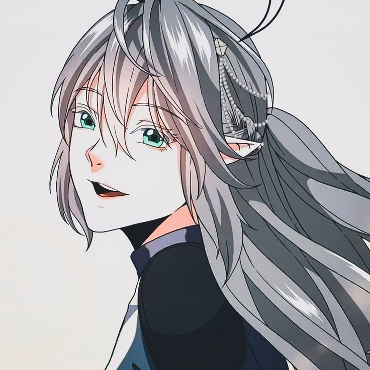

Hero Page 2
Tessia Eralith is a deuteragonist of The Beginning After The End. She is the sole daughter of Alduin Eralith and Merial Eralith, former king and queen of the elven kingdom of Elenoir, and heiress to the throne. Tessia is the childhood friend and love interest of Arthur Leywin, who rescued her from bandits and began training with him under her grandfather Virion Eralith. After becoming the apprentice of Cynthia Goodsky, Tessia was appointed as Student Council President of Xyrus Academy. Following the attack on Xyrus Academy, Tessia joined the war against Alacrya.
